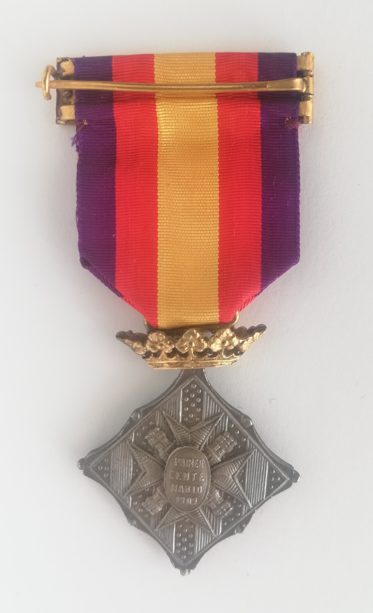
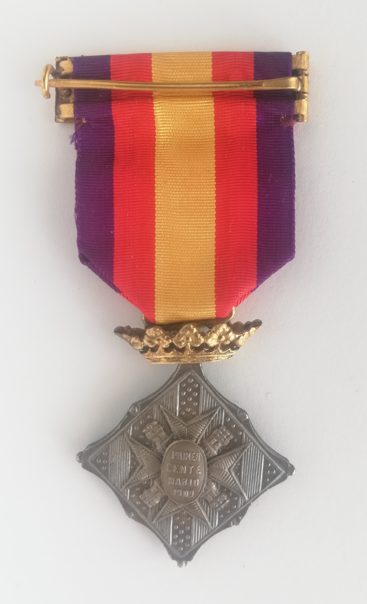

Real Decreto de 28 de enero de 1910. Placa cuadrada en diagonal, en tres categorías. Oro, plata y bronce. Anverso con cruz y 4 castillos y en su centro San Narciso el Santo de la ciudad. En el reverso igual cruz y castillos y en el centro “Primer centenario 1909”. Cinta para descendientes blanca y en su centro los colores nacionales. Para el resto cantos morados.
 
